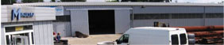

O firmie
Firma Handlowo - Usługowo - Produkcyjna Edward Mikulski powstała w 1978 roku w Krakowie i jako hurtownia materiałów sanitarnych nieprzerwanie do dziś jest obecna na ogólnopolskim rynku branży sanitarnej. Na początku swojej działalności specjalizowała się w sprzedaży rur stalowych (w szczególności bez szwu) oraz żeliwnych, a później armatury pomiarowej i przemysłowej.
Oferta
Rzetelna i solidna obsłga handlowa oraz ciągłe dążenie do satysfakcji i zadowolenia naszych klientów, przyczyniły się do utrwalenia wizerunku naszej firmy jako rzetelnego partnera w biznesie. Staramy się, aby atutami firmy Mikulski była zawsze szybkość i terminowość realizacji przyjętych zamówień. Naszym partnerom handlowym oferujemy korzystne warunki współpracy, które mogą być negocjowae indywidualnie w zależności od oczekiwań.